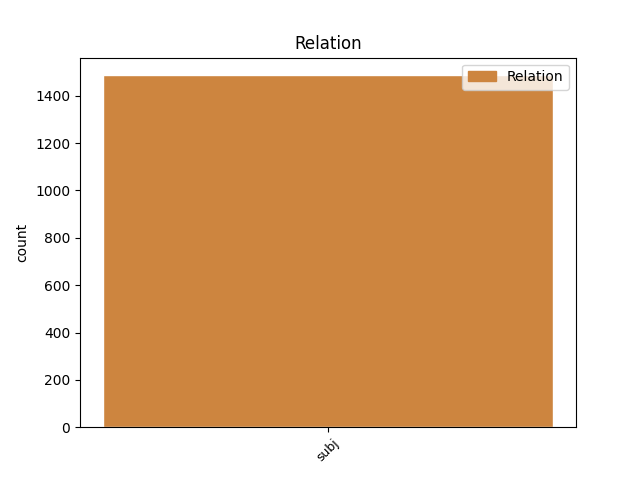
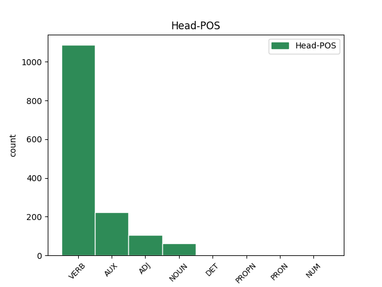
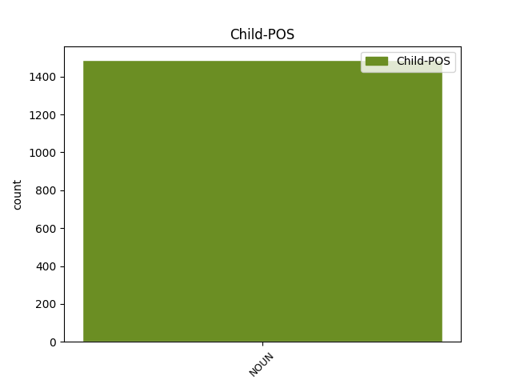

Distribution of features within this leaf



Agreement Rules sorted by frequency.
- When the dependent token is the subject(subj) of the head token, and the dependent token is NOUN.
1 Komiteto _ _ _ _ 0 _ _ _
2 veiklos _ _ _ _ 0 _ _ _
3 kontrolę _ _ _ _ 0 _ _ _
4 vykdo vykdyti VERB vksm.asm.tiesiog.es.vns.3. Mood=Ind|Number=Sing|Person=3|Polarity=Pos|Tense=Pres|VerbForm=Fin 0 _ _ _
5 Aplinkos _ _ _ _ 0 _ _ _
6 ministerija ministerija NOUN dkt.mot.vns.V. Case=Nom|Gender=Fem|Number=Sing 4 subj _ SpaceAfter=No
7 . _ _ _ _ 0 _ _ _
Disagree Examples:
1 Manau _ _ _ _ 0 _ _ _
2 , _ _ _ _ 0 _ _ _
3 kad _ _ _ _ 0 _ _ _
4 naujasis _ _ _ _ 0 _ _ _
5 įstatymas _ _ _ _ 0 _ _ _
6 , _ _ _ _ 0 _ _ _
7 kuris _ _ _ _ 0 _ _ _
8 pakeis _ _ _ _ 0 _ _ _
9 tarybų _ _ _ _ 0 _ _ _
10 sudėtį _ _ _ _ 0 _ _ _
11 , _ _ _ _ 0 _ _ _
12 o _ _ _ _ 0 _ _ _
13 atlyginimus _ _ _ _ 0 _ _ _
14 nustatys nustatyti VERB vksm.asm.tiesiog.būs.vns.3. Mood=Ind|Number=Sing|Person=3|Polarity=Pos|Tense=Fut|VerbForm=Fin 0 _ _ _
15 būtent _ _ _ _ 0 _ _ _
16 tarybos taryba NOUN dkt.mot.dgs.V. Case=Nom|Gender=Fem|Number=Plur 14 subj _ SpaceAfter=No
17 , _ _ _ _ 0 _ _ _
18 išspręs _ _ _ _ 0 _ _ _
19 šitą _ _ _ _ 0 _ _ _
20 klausimą _ _ _ _ 0 _ _ _
21 “ _ _ _ _ 0 _ _ _
22 , _ _ _ _ 0 _ _ _
23 - _ _ _ _ 0 _ _ _
24 žurnalistams _ _ _ _ 0 _ _ _
25 sakė _ _ _ _ 0 _ _ _
26 D _ _ _ _ 0 _ _ _
27 . _ _ _ _ 0 _ _ _
28 Teišerskytė _ _ _ _ 0 _ _ _
29 . _ _ _ _ 0 _ _ _
1 Pradėti _ _ _ _ 0 _ _ _
2 antrąjį _ _ _ _ 0 _ _ _
3 istorijos _ _ _ _ 0 _ _ _
4 skyrių _ _ _ _ 0 _ _ _
5 primenant _ _ _ _ 0 _ _ _
6 skaitytojams _ _ _ _ 0 _ _ _
7 , _ _ _ _ 0 _ _ _
8 kad _ _ _ _ 0 _ _ _
9 , _ _ _ _ 0 _ _ _
10 pasak _ _ _ _ 0 _ _ _
11 Šventojo _ _ _ _ 0 _ _ _
12 Rašto _ _ _ _ 0 _ _ _
13 , _ _ _ _ 0 _ _ _
14 „ _ _ _ _ 0 _ _ _
15 pradžioje _ _ _ _ 0 _ _ _
16 buvo _ _ _ _ 0 _ _ _
17 Žodis _ _ _ _ 0 _ _ _
18 “ _ _ _ _ 0 _ _ _
19 - _ _ _ _ 0 _ _ _
20 išties _ _ _ _ 0 _ _ _
21 originalus _ _ _ _ 0 _ _ _
22 , _ _ _ _ 0 _ _ _
23 laikraštininko _ _ _ _ 0 _ _ _
24 plunksnos _ _ _ _ 0 _ _ _
25 vertas _ _ _ _ 0 _ _ _
26 sumanymas _ _ _ _ 0 _ _ _
27 , _ _ _ _ 0 _ _ _
28 kaip _ _ _ _ 0 _ _ _
29 ir _ _ _ _ 0 _ _ _
30 pasvarstymai _ _ _ _ 0 _ _ _
31 apie _ _ _ _ 0 _ _ _
32 tai _ _ _ _ 0 _ _ _
33 , _ _ _ _ 0 _ _ _
34 kaip _ _ _ _ 0 _ _ _
35 Gorbačiovo _ _ _ _ 0 _ _ _
36 nuomonę _ _ _ _ 0 _ _ _
37 apie _ _ _ _ 0 _ _ _
38 lietuvius _ _ _ _ 0 _ _ _
39 paveikė paveikti VERB vksm.asm.tiesiog.būt-k.dgs.3. Aspect=Perf|Mood=Ind|Number=Plur|Person=3|Polarity=Pos|Tense=Past|VerbForm=Fin 0 _ _ _
40 ligoto _ _ _ _ 0 _ _ _
41 žmogaus _ _ _ _ 0 _ _ _
42 išpuolis išpuolis NOUN dkt.vyr.vns.V. Case=Nom|Gender=Masc|Number=Sing 39 subj _ _
43 prieš _ _ _ _ 0 _ _ _
44 Rembrandto _ _ _ _ 0 _ _ _
45 paveikslą _ _ _ _ 0 _ _ _
46 . _ _ _ _ 0 _ _ _
1 Gali _ _ _ _ 0 _ _ _
2 būti _ _ _ _ 0 _ _ _
3 , _ _ _ _ 0 _ _ _
4 kad _ _ _ _ 0 _ _ _
5 tokie _ _ _ _ 0 _ _ _
6 „ _ _ _ _ 0 _ _ _
7 pasažai pasažas NOUN dkt.vyr.dgs.V. Case=Nom|Gender=Masc|Number=Plur 9 subj _ _
8 “ _ _ _ _ 0 _ _ _
9 yra būti AUX vksm.asm.tiesiog.es.vns.3. Mood=Ind|Number=Sing|Person=3|Polarity=Pos|Tense=Pres|VerbForm=Fin 0 _ _ _
10 skubėjimo _ _ _ _ 0 _ _ _
11 pasekmė _ _ _ _ 0 _ _ _
12 - _ _ _ _ 0 _ _ _
13 istorija _ _ _ _ 0 _ _ _
14 parengta _ _ _ _ 0 _ _ _
15 LPS _ _ _ _ 0 _ _ _
16 įkūrimo _ _ _ _ 0 _ _ _
17 dvidešimtmečio _ _ _ _ 0 _ _ _
18 progai _ _ _ _ 0 _ _ _
19 paminėti _ _ _ _ 0 _ _ _
20 . _ _ _ _ 0 _ _ _
1 Nuo _ _ _ _ 0 _ _ _
2 1989 _ _ _ _ 0 _ _ _
3 metų _ _ _ _ 0 _ _ _
4 rudens _ _ _ _ 0 _ _ _
5 jau _ _ _ _ 0 _ _ _
6 ir _ _ _ _ 0 _ _ _
7 Sąjūdyje _ _ _ _ 0 _ _ _
8 „ _ _ _ _ 0 _ _ _
9 reiškėsi _ _ _ _ 0 _ _ _
10 netolerancija _ _ _ _ 0 _ _ _
11 “ _ _ _ _ 0 _ _ _
12 , _ _ _ _ 0 _ _ _
13 „ _ _ _ _ 0 _ _ _
14 iš _ _ _ _ 0 _ _ _
15 tikrųjų _ _ _ _ 0 _ _ _
16 ryškėjo ryškėti VERB vksm.asm.tiesiog.būt-k.vns.3. Aspect=Perf|Mood=Ind|Number=Sing|Person=3|Polarity=Pos|Tense=Past|VerbForm=Fin 0 _ _ _
17 nedemokratinės _ _ _ _ 0 _ _ _
18 apraiškos apraiška NOUN dkt.mot.dgs.V. Case=Nom|Gender=Fem|Number=Plur 16 subj _ _
19 “ _ _ _ _ 0 _ _ _
20 ; _ _ _ _ 0 _ _ _
21 tik _ _ _ _ 0 _ _ _
22 dėl _ _ _ _ 0 _ _ _
23 to _ _ _ _ 0 _ _ _
24 , _ _ _ _ 0 _ _ _
25 kad _ _ _ _ 0 _ _ _
26 iš _ _ _ _ 0 _ _ _
27 Sąjūdžio _ _ _ _ 0 _ _ _
28 buvo _ _ _ _ 0 _ _ _
29 išstumta _ _ _ _ 0 _ _ _
30 pora _ _ _ _ 0 _ _ _
31 politinių _ _ _ _ 0 _ _ _
32 perėjūnų _ _ _ _ 0 _ _ _
33 , _ _ _ _ 0 _ _ _
34 persiorientavusių _ _ _ _ 0 _ _ _
35 į _ _ _ _ 0 _ _ _
36 LKP _ _ _ _ 0 _ _ _
37 . _ _ _ _ 0 _ _ _
1 Keturi _ _ _ _ 0 _ _ _
2 puslapiai puslapis NOUN dkt.vyr.dgs.V. Case=Nom|Gender=Masc|Number=Plur 13 subj _ SpaceAfter=No
3 , _ _ _ _ 0 _ _ _
4 skirti _ _ _ _ 0 _ _ _
5 visų _ _ _ _ 0 _ _ _
6 Lietuvos _ _ _ _ 0 _ _ _
7 Sąjūdžio _ _ _ _ 0 _ _ _
8 tarybų _ _ _ _ 0 _ _ _
9 veiklai _ _ _ _ 0 _ _ _
10 , _ _ _ _ 0 _ _ _
11 pernelyg _ _ _ _ 0 _ _ _
12 kuklus _ _ _ _ 0 _ _ _
13 bandymas bandymas NOUN dkt.vyr.vns.V. Case=Nom|Gender=Masc|Number=Sing 0 _ _ _
14 apžvelgti _ _ _ _ 0 _ _ _
15 Sąjūdžio _ _ _ _ 0 _ _ _
16 kaip _ _ _ _ 0 _ _ _
17 masinio _ _ _ _ 0 _ _ _
18 judėjimo _ _ _ _ 0 _ _ _
19 genezę _ _ _ _ 0 _ _ _
20 . _ _ _ _ 0 _ _ _